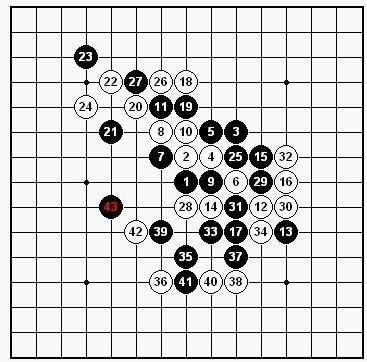
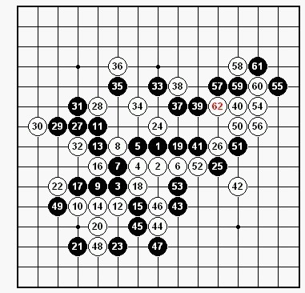

2011全国锦标赛总结
首页
≮炫飞☆棋社≯
#1 2011全国锦标赛总结 作者：炫飞冰弦 发表时间：2011-10-8 17:17:40
第一轮 王硕（黑） VS 李溶浩（白）和棋

第一盘开了疏星。一是求稳。二是想找找状态。对手没换，我给出了一、五打。对方留5打。前11手正常。12-14变招。我没见过。通过15、17交换。消耗了右下的白棋优势。18转身，占外势。后面黑白互相控盘。最后没什么空间。和棋。
第二轮 张进宇（黑） VS 王硕（白）白胜

张老师开出疏星。我执白。张老师给出一、二打。我留二打。张老师走出很古老的变化。原来疏星的和棋大定式。前26步正常。
#2 Re:2011全国锦标赛总结 作者：炫飞兔子 发表时间：2011-10-8 17:21:46
 先抢沙发再慢慢看。
先抢沙发再慢慢看。
#3 Re:2011全国锦标赛总结 作者：秋风雾语 发表时间：2011-10-8 17:26:19
占个沙发。。期待王硕智运会能有更好的发挥
#4 Re:2011全国锦标赛总结 作者：秋风雾语 发表时间：2011-10-8 17:26:58
兔子
#5 Re:2011全国锦标赛总结 作者：吉小鼠 发表时间：2011-10-8 17:31:57
继续加油~~~咔咔~~~~
#6 Re:2011全国锦标赛总结 作者：冰雪笑醉 发表时间：2011-10-8 17:36:17
 倒杯茶。，慢慢看~~~
倒杯茶。，慢慢看~~~
#7 Re:2011全国锦标赛总结 作者：闫荣辉 发表时间：2011-10-8 17:56:49
第二张图58可以很快抓44
#8 Re:2011全国锦标赛总结 作者：第五象限 发表时间：2011-10-8 23:36:50
由于高飞老师和棋就能进小组前二。所以双方和棋都能接受
为什么王硕同学可以接受呢？
#9 Re:2011全国锦标赛总结 作者：也也 发表时间：2011-10-9 9:08:19
王同学。。。 要能 多赢一局 就进前八了。
#10 Re:2011全国锦标赛总结 作者：掌棋宣传员 发表时间：2011-10-9 12:38:55
感觉第4盘白棋还有很多空间可以下...